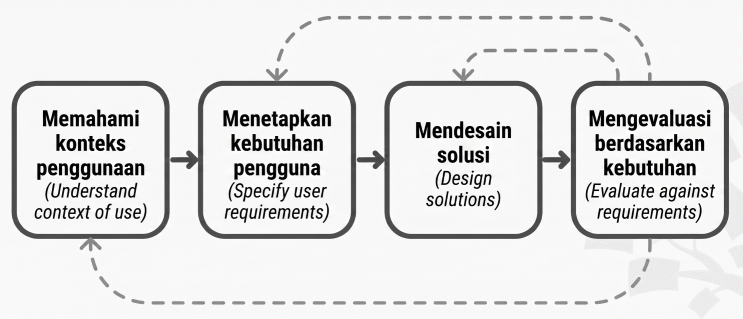

Assalamu'alaikum wr. wb., selamat sore, saya Esa Sya'bani asal UPBJJ Purwokerto prodi S1 sistem informasi izin menanggapi topik diskusi yang bapak berikan.
-
Pendekatan untuk Memahami Kebutuhan Bisnis Klien Awam
Untuk menghadapi klien yang tidak memiliki latar belakang IT, berikut ini beberapa pendekatan yang bisa dilakukan untuk memahami kebutuhan bisnis klien menurut saya.
- Pendekatan prototyping. Pada banyak kasus, user seringkali baru bisa mendefinisikan kebutuhannya ketika mereka sudah melihat langsung gambar rancangan sistemnya, khususnya rancangan antarmuka. Oleh karena itu, menurut saya pendekatan yang cocok untuk kasus ini yaitu dengan menyediakan prototype untuk user/klien, sehingga mereka dapat lebih mudah untuk mendefinisikan kebutuhannya.
- Pendekatan teknik observasi. Daripada hanya menanyakan "fitur apa saja yang dibutuhkan?", seorang developer sebaiknya melakukan pengamatan cara kerja klien sendiri. Dengan teknik ini, kita bisa mendapatkan data kebutuhan perangkat lunak yang akan dikembangkan. Teknik ini cocok karena kita tidak perlu menanyakan kepada klien yang masih awam dan bingung akan kebutuhannya.
- Pendekatan User Centered Design (UCD). User-centered design/UCD merupakan proses desain bertahap di mana para desainer/developer berfokus pada user dan kebutuhan mereka di setiap fase proses desain. Ada 4 fase dalam teknik ini, yaitu:

Dari 4 fase tersebut, dapat dipahami developer mengembangkan perangkat lunak tanpa membebani user dengan bahasa teknis, namun lebih ke bahasa bisnis, sehingga dapat menjembatani kesenjangan pengetahuan teknis.
-
Saran Fitur-fitur yang Dibutuhkan
Untuk membuat sistem penjualan souvenir online dapat bersaing di pasar digital, berikut ini beberapa saran fitur yang sebaiknya ada menurut saya.
-
Manajemen gudang dan keuangan. Perangkat lunak bisnis yang baik harus memiliki kemampuan untuk mengelola informasi bisnis seperti akuntansi, penjualan, pembayaran, penyimpanan (inventaris).
-
Katalog yang terstruktur. Strukutur yang paling cocok untuk aplikasi e-commerce yaitu strukutur grid, dimensi horizontal menampilkan jenis kategori barang (misalnya souvenir pernikahan, souvenir perusahaan, souvenir haji, dll), sedangkan vertikal memuat produk dan harga/penawaran produk.
-
Fitur e-commerce umum. Supaya sebuah sistem e-commerce mampu bersaing di pasar global, developer harus menyertakan fitur wajib seperti keranjang belanja, payment gateway yang aman untuk berbagai metode pembayaran, search bar, serta fitur ulasan pembeli untuk meningkatkan kepercayaan pelanggan.
-
Pencarian populer. Fitur cerdas yang otomatis menampilkan daftar produk yang paling banyak dicari saat ini. Pelanggan yang mencari souvenir biasanya datang dengan tidak memiliki ide pasti souvenir apa yang akan mereka pesan. Dengan adanya fitur pencarian populer, pelanggan akan langsung mendapatkan rekomendasi tren terbaru, yang akan mempercepat mereka mengambil keputusan untuk memesan souvenir tersebut.
-
Layanan customer service. Dibuatkan area khusus di dalam website untuk menyediakan akses cepat bagi pelanggan untuk meminta bantuan, bertanya, atau menyelesaikan masalah teknis saat berbelanja, misalnya fitur live chat, halaman FAQ, dan kontak telepon.
-
Membuat Sistem yang Mudah untuk Digunakan
Berikut ini beberapa cara yang bisa kita lakukan untuk memastikan bahwa sistem yang kita bangun mudah digunakan oleh klien yang kurang familiar dengan teknologi.
-
Penyusunan dokumen petunjuk pengenalan (introductory manual). Klien termasuk dalam kategori End-users yang tidak tertarik pada detail teknis. Oleh karena itu, pengembang wajib memberikan dokumentasi petunjuk pengenalan yang berisikan pendahuluan perkenalan terhadap perangkat lunak dan mendeskripsikan penggunaan normal dari perangkat lunak yang sudah dikembangkan tersebut.
-
Menggunakan teknik konversi per fase. Supaya tidak membingungkan klien yang masih awam, teknik konversi yang cocok yaitu dengan Menggunakan konversi per fase. Dilakukan dengan berpindah per fase dari sistem lama ke sistem baru secara bertahap misalkan fase pertama memberikan pengenalan dasar, fase kedua pengenalan proses transaksi, fase ketiga menjelaskan fitur tingkat lanjut.
-
Menerapkan prinsip visibility of system status. Sistem harus selalu menginformasikan apa yang sedang terjadi kepada user melalui umpan balik yang jelas dalam waktu yang wajar. Misalnya, saat stok berhasil diperbarui, harus ada notifikasi "Berhasil"
Sumber Referensi
-
Sukamto, R. A. (n.d.). MSIM4303 - Rekayasa Perangkat Lunak. Tangerang Selatan: Universitas Terbuka.
-
Interaction Design Foundation. (n.d.). User Centered Design. Diakses dari Interaction Design Foundation
-
TechOSquare. (n.d.). Online Store Features List: Must-Haves for E-commerce. Diakses dari TechOSquare
-
Nielsen Norman Group. (n.d.). 10 Usability Heuristics for User Interface Design. Diakses dari NN/Group